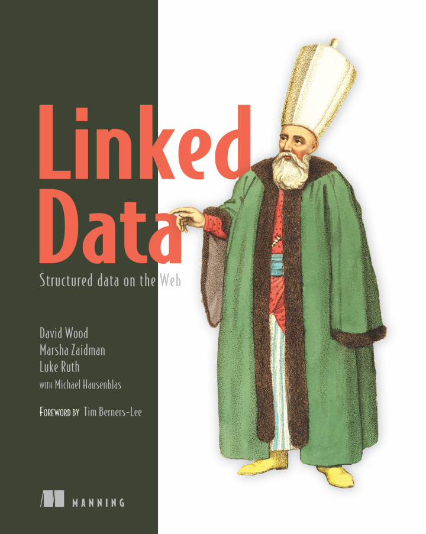

Australian Government Linked Data Working Group
Assistance
This group can assist with many aspects of Linked Data. However member representatives are volunteers and may only provide limited resources. A formal agreement with a member organisation may be required for significant work. We can help with:
-
Publishing
- presenting Linked Data resources using the data.gov.au persistent domain
-
Learning
- about Linked Data through group discussions, books and online resources
-
Finding
- experts in Linked Data to work with
-
Describing
- the reasons for, benefits from and processes around publishing Linked Data
-
Demonstrating
- existing Linked Data things online to show people what they are and what they can do
See each tab below for more details.
How we can help
This group can help you publish Linked Data resources (ontologies, vocabularies, registers of Linked Data objects and whole Linked Data datasets) using the data.gov.au domain name. This means the landing page for your vocabulary or other resource could be something like http://environment.data.gov.au/def/voc/my-voc. This allows the resource to have a long-term stable web location and also to be listed in centralised lists of Linked Data resources that we are developing.
We can also help with the generation and presentation of some sorts of Linked Data resources. See the How To page for assistance with generating and presenting Linked Data things. Other tabs on this page describe how to get further assistance from the group with Linked Data things or where to find resources to begin learning by yourself.
Suitability
The AGLDWG is keen to assist government organisations publish Semantic Web/Linked Data ontologies for any purposes they see fit within the realm of government business using the persistent data.gov.au namespace.
Examples
See our Showcase page for demonstrations of ontologies, datasets etc. that we have already published and which will give you an idea of what can be done.
Publication process
If you want to publish a Linked Data resource at data.gov.au, you should follow these general steps:
-
Design your resource
- We may be able to assist with some aspects of design. Perhaps contact the group or see the
-
Apply for a URI namespace for your resource via agldwg-all@lists.csiro.au
- Different resources need different namespaces and we can assist with the allocation of appropriate ones for all resource types
- What we will need from you to assist here is a technical and human description of your resource, such as an ontology definition of a class of object you want a Linked Data register for or an RDF file for a vocabulary which includes standard metadata
- See the individual How Tos for presenting each type of Linked Data resource for publication on our How To page.
-
Present your resource
- We'll need a demonstration of the resource in human- and machine-readable forms, as required for Linked Data.
- Exactly what you need for the demonstration will depend on the resource. For a simple vocabulary, an RDF and an HTML file would be fine. For a Linked Data dataset, you may need to show us a system online that generated RDF & HTML.
- As always, see the How To page for help with the specifics for each kind of Linked Data resource
-
Deliver your resource online
- The AGLDWG can host simple Linked Data resources for you (think small vocabularies and ontologies) but you'll need to arrange your own hosting for things like large registers of millions of objects
- Organisations like the Australian National Data Service can also assist with production hosting of vocabularies and perhaps ontologies
-
Keep your resource alive
- Once online and with persistent data.gov.au-based URIs allocated to it, you're going to need to keep that resource alive! We'd like to see some indication as to how you hope to do this, such as a plan for funding the systems it runs on
- If hosted by us, we will guarantee to keep your resource online indefinitely
How we can help
The main way we help people learn about Linked Data is through involvement in the group. The main mailing list agldwg-all@lists.csiro.au is the right one to join if you want to learn about Linked Data and its use in Australian government.
If you're after a Linked Data expert, see the Finding tab.
In addition, here are some general resources about Linked Data that we recommend:
Videos


Books
These are textbooks for learning how to produce and work with Linked Data at a technical level:
|
Heath, T. & Bizer, C., (2011) Linked Data: Evolving the Web into a Global Data Space, J. Hendler, ed., Morgan & Claypool (Freely available online) |
|
|  |
Wood, D., Zaidman, M., Ruth, L. and Hausenblas M. (2011) Linked Data: Structured data on the Web, Manning. ISBN 9781617290398. ($US40) |

|
Allemang & Hendler Semantic Web for the Working Ontologist: Effective Modeling in RDFS and OWL, 2nd Edition ISBN 0123859654 ($US50) |

|
Bernadette Hyland & David Wood (2011) The Joy of Data - A Cookbook for Publishing Linked Government Data on the Web In: Wood D. (eds) Linking Government Data. Springer, New York, NY (€25) |
W3C Linked Data online resources
Linked Data Glossary (2013)
|
Linked Data Platform 1.0 (2015)
|
How we can help
If you need to contact a Linked Data expert, either for hire or as an informal consultant, try contacting one or all of the co-chairs of this group on the Contact page. The group has quite a long mailing list of people with different Linked Data-related skills. We can probably find someone to help, regardless of whether you're after research, system implementation, education or commercial support.
We also have a general Linked Data discussion mailing list - agldwg-all@lists.csiro.au - and we welcome poeple joining in order to find Linked Data people to contact. Just drop us a line, again via the Contact page, to join the list.
How we can help
Do you think you "get" Linked Data but want words about it for yourself or others that really get the points across? We have a Visibility subgroup that deals with promoting this group and Linked Data generally. Contact the co-chair of this group who runs the Visibility group via our Contacts page.
Statements
Some useful phrases you might want to use about Linked Data are:
 |
The term Linked Data refers to a set of best practices for publishing structured data on the Web. These principles have been coined by Tim Berners-Lee in the design issue note Linked Data. The principles are: - Intro to the W3C's wiki on Linked Data, https://www.w3.org/wiki/LinkedData |
 |
|
Linked data is a standard way to represent data on a wide range of topics. Publishing linked data makes it easier for developers to connect information from different sources, resulting in new and innovative applications. - The EU open data portal describing why they use Linked Data, http://data.europa.eu/euodp/en/linked-data |
|
How we can help
We are keen to demonstrate Linked Data in action and help you to do so too, so we can:
- Point you to our Showcase page which contains a range of Linked Data demos
-
Talk at an event you're running
- See our list of presenations at our meetings and elsewhere
- Step through a Linked Data system or data
- We are keen to guide people through datasets and systems our members have been involved with. Just ask and we can arrange something